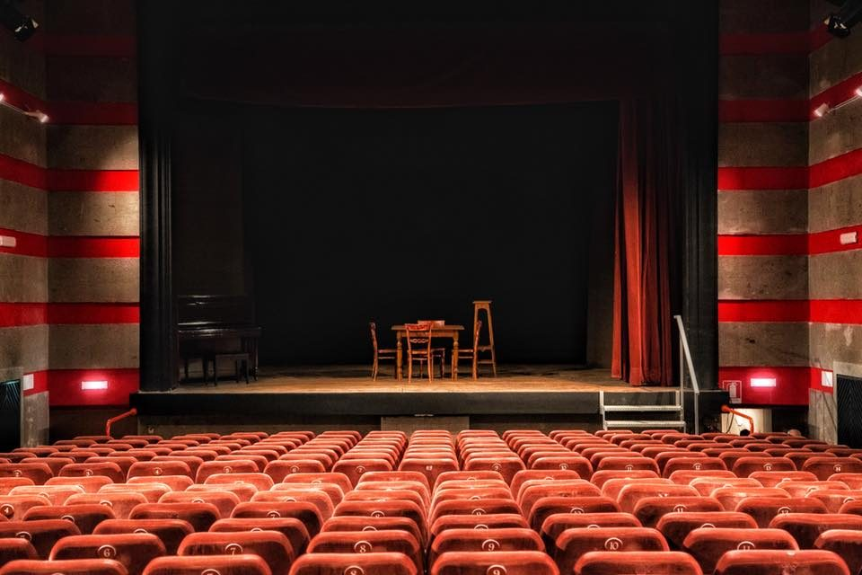
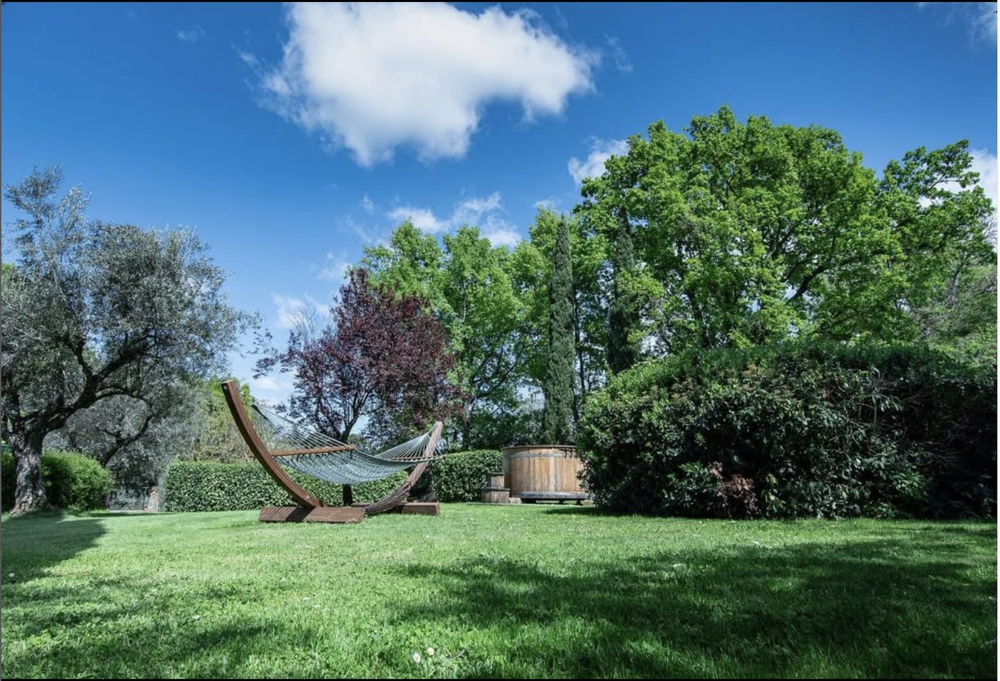
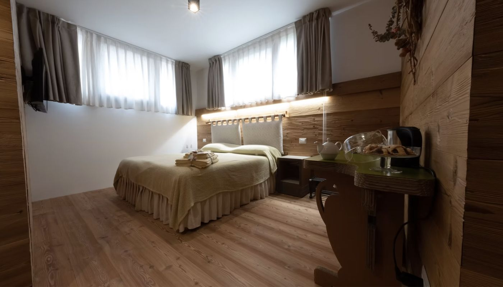

Giovani attori e attrici
Per approfondire relazione, ascolto, corpo e presenza attraverso il testo.
Laboratorio intensivo residenziale di voce e teatro
Una settimana immersiva a contatto con la natura per allenare voce, corpo, emozione e presenza scenica a partire da Il Gabbiano di Anton Čechov.
Cos'è
Il canto del Gabbiano è un laboratorio intensivo residenziale dedicato alla voce come strumento espressivo totale: voce per il canto e voce per la recitazione.
Il lavoro nasce dal testo di Čechov e si sviluppa in relazione diretta con la casa, gli ambienti esterni, il paesaggio naturale e i diversi momenti della giornata. Corpo, natura, tempo e parola diventano materiali di ricerca.
Per chi è
Per approfondire relazione, ascolto, corpo e presenza attraverso il testo.
Per portare il lavoro vocale dentro una dimensione attoriale e drammaturgica.
Per chi desidera un percorso intensivo orientato alla ricerca scenica.
Il laboratorio è rivolto a partecipanti dai 19 anni in su.
Programma
Dall'11 al 17 maggio 2026, con 6/8 ore di lavoro al giorno. Il calendario dettagliato viene organizzato attorno ai nuclei di ricerca indicati nel materiale evento.
Un lavoro di preparazione che integra respiro, ascolto, corpo, emozione e voce.
La voce cantata come materia espressiva, non solo tecnica ma presenza viva.
Parola, intenzione e relazione scenica entrano nel lavoro sulla voce.
Il percorso parte da Il Gabbiano e osserva i rapporti interni alla pièce.
Gli ambienti della casa, la natura esterna e le atmosfere del tempo quotidiano diventano spazio di esplorazione.
La ricerca sviluppata durante la settimana viene testata sul palco del Teatro San Leonardo di Viterbo.

La ricerca incontra il palco
Teatro San Leonardo, ViterboCosa include
Voce per il canto, voce per la recitazione, training e analisi del testo.
Camera doppia o tripla all'interno del Bio&B Italyke.
Gli ambienti della casa e la natura esterna entrano nel percorso di lavoro.
Ultimo giorno di verifica della ricerca presso il Teatro San Leonardo.
Costo
La quota indicata nel materiale evento comprende laboratorio e alloggio in camera doppia o tripla.
A persona
385 €
Caparra, saldo e condizioni di prenotazione: da confermare.
Location / B&B
Il laboratorio si svolge al Bio&B Italyke, in un contesto verde dove la casa e il grande spazio esterno non fanno da semplice sfondo: diventano parte della ricerca su ascolto, paesaggio, relazione e presenza.
L'alloggio è previsto in camera doppia o tripla. Il materiale evento rimanda alle camere del B&B per maggiori dettagli.
Vedi le camere del Bio&B Italyke

Chi conduce

Attore e insegnante di voce per la recitazione
Diplomato alla civica scuola di teatro Paolo Grassi, ha lavorato, tra gli altri, al Teatro Franco Parenti e Teatro OutOff di Milano. Ha insegnato voce per la recitazione alla Civica Scuola di Teatro Paolo Grassi, al Teatro Stabile di Napoli e al Boffalora Acting Studio.

Attrice, cantante e insegnante di canto
Diplomata al conservatorio Giuseppe Verdi di Milano, prosegue gli studi presso la SDM di Milano. Ha lavorato in vari teatri, tra cui Teatro Franco Parenti e Teatro OutOff di Milano. Ha lavorato, tra gli altri, presso il Teatro La Latina di Madrid. Insegna canto in diverse scuole, tra cui l'accademia MAS.
FAQ
A giovani attori e attrici, giovani cantanti interessati al lavoro attoriale, professionisti e aspiranti professionisti. Età minima: 19 anni.
Il materiale indica 6/8 ore di lavoro al giorno.
In camera doppia o tripla all'interno del Bio&B Italyke di Viterbo.
Il materiale chiede di inviare curriculum vitae e/o una breve lettera di presentazione motivazionale.
L'ultimo giorno è prevista la possibilità di testare la ricerca sviluppata durante la settimana sul palco del Teatro San Leonardo di Viterbo.
Il laboratorio si svolge dall'11 al 17 maggio 2026 a Viterbo.
Richiedi informazioni
Compila il form: si aprirà WhatsApp con un messaggio già preparato. Potrai aggiungere domande su alloggio, candidatura e dettagli pratici prima di inviarlo.